Overview
This article is a visual gallery for clover’s modification heatmap
functions. It covers every parameter of plot_mod_heatmap()
and prep_mod_heatmap(), plus the related
plot_bcerror_profile() and
plot_mod_landscape() functions.
All examples use the bundled E. coli base-calling error data shipped with the package.
Data preparation
The bundled RDS contains pre-summarized bcerror data comparing
wild-type (wt) and TruB-deletion (tb) E.
coli across 10 tRNAs.
bcerror_rds <- readRDS(clover_example("ecoli/bcerror_summary.rds"))
bcerror_summary <- bcerror_rds$bcerror_summary
bcerror_charged <- bcerror_rds$bcerror_chargedCompute the per-position delta (wt minus TruB-del). Positive values mean higher error in wild-type, indicating a modification lost in the mutant.
bcerror_delta <- compute_bcerror_delta(bcerror_summary, delta = wt - tb)
bcerror_delta
#> # A tibble: 796 × 5
#> ref pos tb wt delta
#> <chr> <int> <dbl> <dbl> <dbl>
#> 1 host-tRNA-Asn-GTT-1-1 1 0.0334 0.0405 0.00711
#> 2 host-tRNA-Asn-GTT-1-1 2 0.0660 0.0896 0.0236
#> 3 host-tRNA-Asn-GTT-1-1 3 0.0587 0.0809 0.0221
#> 4 host-tRNA-Asn-GTT-1-1 4 0.195 0.201 0.00584
#> 5 host-tRNA-Asn-GTT-1-1 5 0.258 0.288 0.0292
#> 6 host-tRNA-Asn-GTT-1-1 6 0.117 0.134 0.0170
#> 7 host-tRNA-Asn-GTT-1-1 7 0.125 0.133 0.00720
#> 8 host-tRNA-Asn-GTT-1-1 8 0.0644 0.0706 0.00617
#> 9 host-tRNA-Asn-GTT-1-1 9 0.0623 0.0619 -0.000387
#> 10 host-tRNA-Asn-GTT-1-1 10 0.0295 0.0266 -0.00295
#> # ℹ 786 more rowsPreparing heatmap data
prep_mod_heatmap() joins Sprinzl coordinates, optionally
annotates known modifications from MODOMICS, and shortens tRNA names for
display.
sprinzl <- read_sprinzl_coords(
clover_example("sprinzl/ecoliK12_global_coords.tsv.gz")
)
trna_fasta <- clover_example("ecoli/trna_only.fa.gz")
mods <- modomics_mods(trna_fasta, organism = "Escherichia coli")
heatmap_data <- prep_mod_heatmap(
bcerror_delta,
sprinzl_coords = sprinzl,
mods = mods
)
heatmap_data
#> # A tibble: 795 × 10
#> ref pos tb wt delta trna_id sprinzl_label global_index has_mod
#> <chr> <dbl> <dbl> <dbl> <dbl> <chr> <fct> <dbl> <lgl>
#> 1 tRNA… 1 0.0334 0.0405 7.11e-3 tRNA-A… 1 1 FALSE
#> 2 tRNA… 2 0.0660 0.0896 2.36e-2 tRNA-A… 2 2 FALSE
#> 3 tRNA… 3 0.0587 0.0809 2.21e-2 tRNA-A… 3 3 FALSE
#> 4 tRNA… 4 0.195 0.201 5.84e-3 tRNA-A… 4 4 FALSE
#> 5 tRNA… 5 0.258 0.288 2.92e-2 tRNA-A… 5 5 FALSE
#> 6 tRNA… 6 0.117 0.134 1.70e-2 tRNA-A… 6 6 FALSE
#> 7 tRNA… 7 0.125 0.133 7.20e-3 tRNA-A… 7 7 FALSE
#> 8 tRNA… 8 0.0644 0.0706 6.17e-3 tRNA-A… 8 8 TRUE
#> 9 tRNA… 9 0.0623 0.0619 -3.87e-4 tRNA-A… 9 9 FALSE
#> 10 tRNA… 10 0.0295 0.0266 -2.95e-3 tRNA-A… 10 10 FALSE
#> # ℹ 785 more rows
#> # ℹ 1 more variable: trna_label <chr>The result is a tibble with sprinzl_label as an ordered
factor (canonical tRNA position ordering), trna_label for
compact y-axis names, and has_mod marking known MODOMICS
modification sites.
Basic heatmap
The simplest call passes the prepared data with appropriate column mappings.
plot_mod_heatmap(
heatmap_data,
value_col = "delta",
ref_col = "trna_label"
)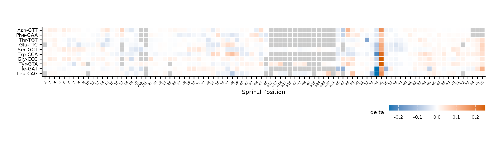
Basic modification heatmap with default settings.
Color scale
Control the diverging color scale with color_limits,
color_low, color_high, and
na_value.
plot_mod_heatmap(
heatmap_data,
value_col = "delta",
ref_col = "trna_label",
color_limits = c(-0.1, 0.1),
color_low = "#7B3294",
color_high = "#008837",
na_value = "gray95"
)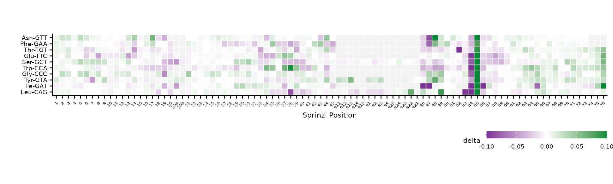
Custom color scale with tighter limits and purple-green palette.
The default palette uses colorblind-friendly blue
(#0072B2) and vermillion (#D55E00). Values
outside color_limits are squished to the extremes.
Clustering
By default, rows are clustered using Ward’s D2 hierarchical
clustering on the Sprinzl-position value matrix. Set
cluster = FALSE to keep alphabetical order.
plot_mod_heatmap(
heatmap_data,
value_col = "delta",
ref_col = "trna_label",
color_limits = c(-0.1, 0.1)
)
Clustered rows (default).
plot_mod_heatmap(
heatmap_data,
value_col = "delta",
ref_col = "trna_label",
cluster = FALSE,
color_limits = c(-0.1, 0.1)
)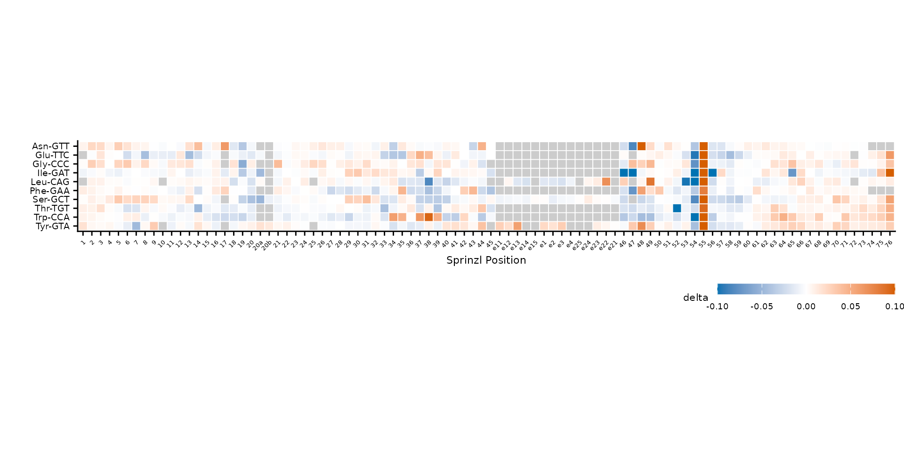
Alphabetical row order (cluster = FALSE).
Noise filtering with cluster_threshold
When clustering, low-level noise can dominate the distance matrix.
Setting cluster_threshold restricts clustering to positions
where at least one tRNA exceeds the threshold in absolute value.
plot_mod_heatmap(
heatmap_data,
value_col = "delta",
ref_col = "trna_label",
color_limits = c(-0.1, 0.1),
cluster_threshold = 0.05
)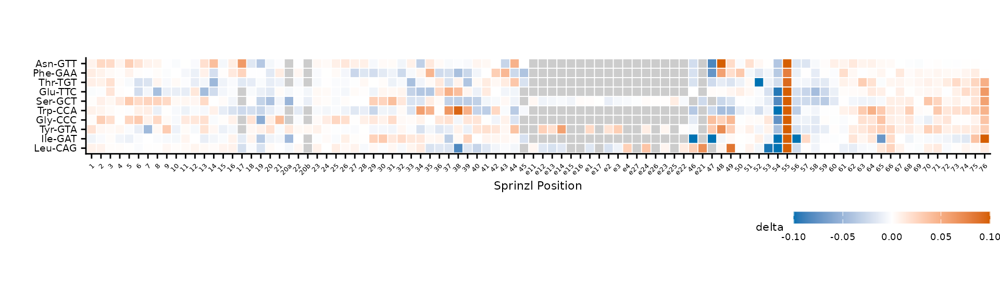
Clustering uses only positions with |delta| > 0.05.
Group-aware clustering
When tRNAs belong to natural groups (e.g., amino acid families), use
group_col to cluster within each group and draw horizontal
dividers between them. First, add an amino acid column to the data.
plot_mod_heatmap(
heatmap_grouped,
value_col = "delta",
ref_col = "trna_label",
color_limits = c(-0.1, 0.1),
group_col = "amino_acid"
)Clustering within amino acid groups, separated by dividers.
Control the divider line thickness with
divider_linewidth.
plot_mod_heatmap(
heatmap_grouped,
value_col = "delta",
ref_col = "trna_label",
color_limits = c(-0.1, 0.1),
group_col = "amino_acid",
divider_linewidth = 2
)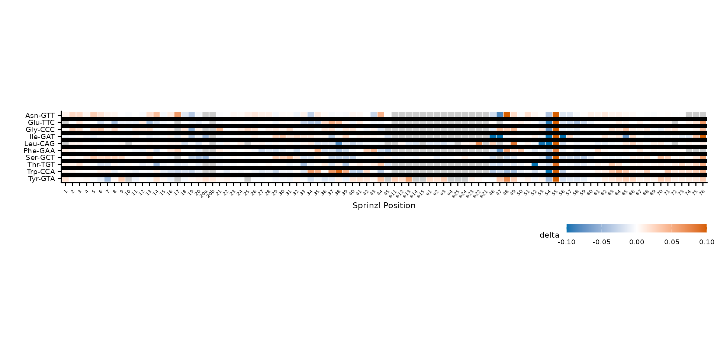
Thicker dividers between groups.
Modification highlights
When prep_mod_heatmap() is called with
mods, a logical has_mod column marks known
modification sites. Use highlight_col to overlay dots on
those cells.
plot_mod_heatmap(
heatmap_data,
value_col = "delta",
ref_col = "trna_label",
color_limits = c(-0.1, 0.1),
highlight_col = "has_mod"
)MODOMICS modification sites marked with dots.
Adjust dot appearance with highlight_size and
highlight_offset (x/y displacement from tile center).
plot_mod_heatmap(
heatmap_data,
value_col = "delta",
ref_col = "trna_label",
color_limits = c(-0.1, 0.1),
highlight_col = "has_mod",
highlight_size = 1.2,
highlight_offset = c(-0.3, 0.3)
)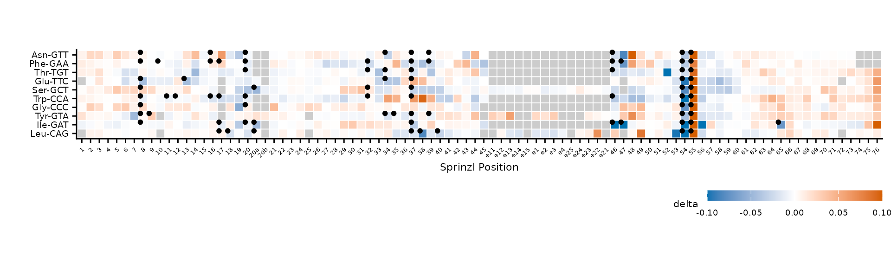
Larger highlight dots with custom offset.
Tile labels
Overlay text on tiles with label_col. Labels are only
shown where abs(value) >= label_min, and text color
automatically switches between black and white for contrast.
# Add the reference base at each position for labeling
ref_seqs <- Biostrings::readDNAStringSet(trna_fasta)
ref_bases <- tibble::tibble(
ref = sub("^host-", "", rep(names(ref_seqs), Biostrings::width(ref_seqs))),
pos = unlist(lapply(Biostrings::width(ref_seqs), seq_len)),
ref_base = strsplit(as.character(unlist(ref_seqs)), "") |> unlist()
)
heatmap_labeled <- heatmap_data |>
left_join(ref_bases, by = c("ref", "pos"))
plot_mod_heatmap(
heatmap_labeled,
value_col = "delta",
ref_col = "trna_label",
color_limits = c(-0.1, 0.1),
label_col = "ref_base",
label_min = 0.03,
label_size = 2
)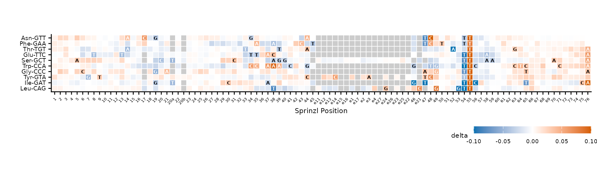
Reference bases overlaid on tiles where |delta| >= 0.03.
Legend and caption
Customize the fill legend with fill_name and
fill_breaks, and add explanatory text with
caption.
plot_mod_heatmap(
heatmap_data,
value_col = "delta",
ref_col = "trna_label",
color_limits = c(-0.1, 0.1),
fill_name = "\u0394 error rate",
fill_breaks = c(-0.1, -0.05, 0, 0.05, 0.1),
caption = "Positive values = higher error in wt (modification present in wt, lost in TruB-del)."
)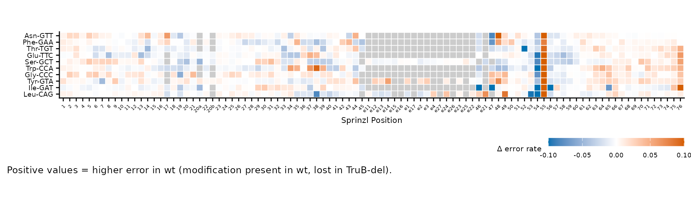
Custom legend title, breaks, and caption.
Square versus free aspect ratio
By default, square = TRUE uses
coord_fixed(ratio = 1) for square tiles. Set
square = FALSE to let ggplot2 fill the available space,
which is useful for wide heatmaps with many positions.
plot_mod_heatmap(
heatmap_data,
value_col = "delta",
ref_col = "trna_label",
color_limits = c(-0.1, 0.1),
square = FALSE
)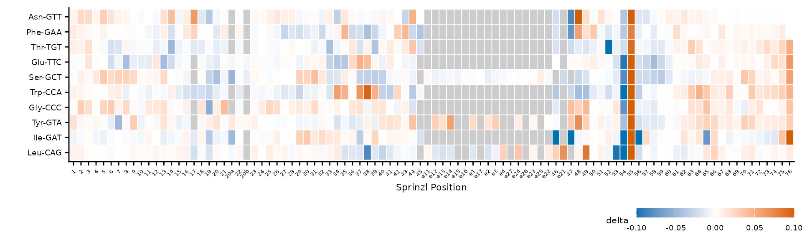
Free aspect ratio stretches tiles to fill the plot area.
Base-calling error profiles
plot_bcerror_profile() creates line plots of
per-position error rates, faceted by tRNA and colored by condition.
plot_trnas <- c(
"host-tRNA-Asn-GTT-1-1",
"host-tRNA-Glu-TTC-1-1",
"host-tRNA-Phe-GAA-1-1"
)
plot_bcerror_profile(bcerror_summary, refs = plot_trnas)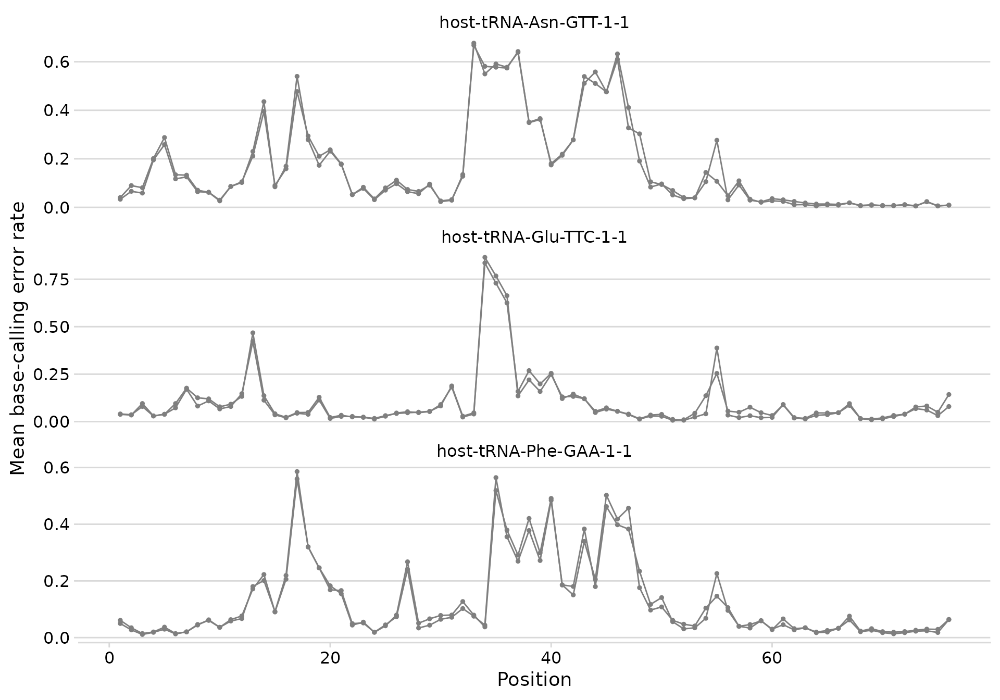
Error profiles for three tRNAs.
Adding modification annotations
Pass a mods tibble to overlay vertical dashed lines at
known modification positions.
plot_bcerror_profile(bcerror_summary, refs = plot_trnas, mods = mods)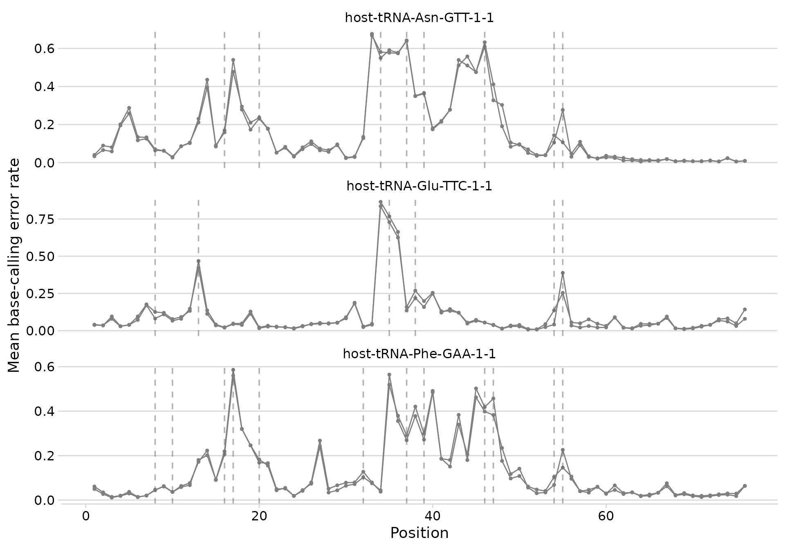
Error profiles with MODOMICS modification positions marked.
Custom colors and layout
Override condition colors with a named vector, and change the facet
layout with ncol.
plot_bcerror_profile(
bcerror_summary,
refs = plot_trnas,
mods = mods,
colors = c(wt = "#E69F00", tb = "#56B4E9"),
ncol = 2
)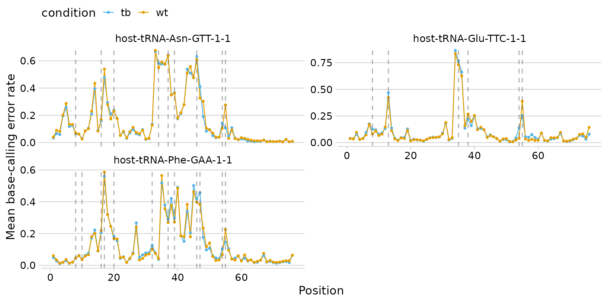
Custom colors and two-column layout.
Modification landscape
plot_mod_landscape() creates a stacked panel plot
showing multiple metrics along the tRNA sequence. Each metric gets its
own panel sharing a common x-axis. This is useful for comparing error
rates, mismatch types, or other per-position statistics side by
side.
First, prepare single-tRNA data with Sprinzl coordinates and region annotations.
# Pick one tRNA and reshape for landscape plotting
landscape_data <- bcerror_summary |>
filter(ref == "host-tRNA-Glu-TTC-1-1", condition == "wt")
# Add Sprinzl coordinates and region info
sprinzl_glu <- sprinzl |>
filter(trna_id == "tRNA-Glu-UUC-1-1") |>
select(pos, sprinzl_label, region)
landscape_data <- landscape_data |>
left_join(sprinzl_glu, by = "pos") |>
filter(!is.na(sprinzl_label))
# Add a logical column for known modification positions
mod_positions <- mods |>
filter(ref == "host-tRNA-Glu-TTC-1-1") |>
distinct(pos) |>
mutate(has_mod = TRUE)
landscape_data <- landscape_data |>
left_join(mod_positions, by = "pos") |>
mutate(has_mod = tidyr::replace_na(has_mod, FALSE))
plot_mod_landscape(
landscape_data,
metrics = c("mean_error", "mean_mis")
)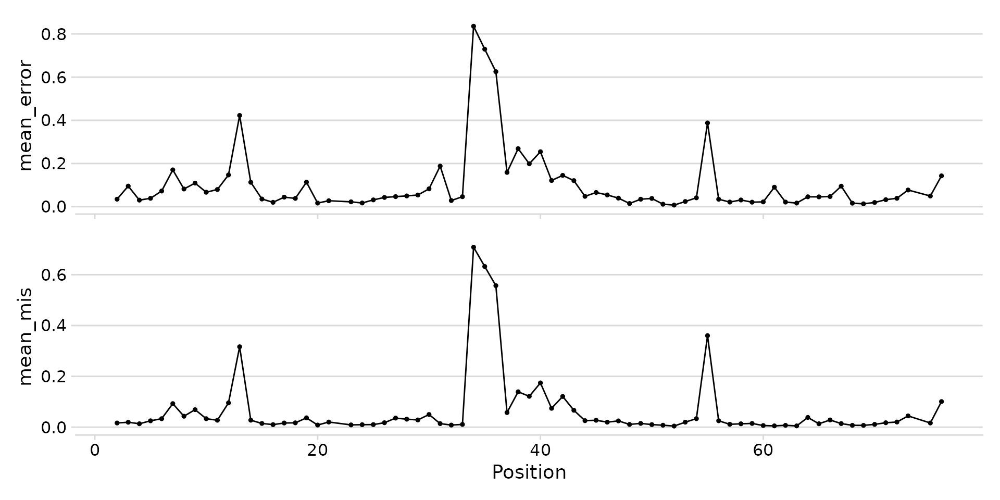
Stacked landscape of error rate and mismatch frequency.
Region shading
Pass region_col to add background shading for structural
regions (acceptor-stem, D-loop, anticodon-stem, etc.).
plot_mod_landscape(
landscape_data,
metrics = c("mean_error", "mean_mis"),
region_col = "region"
)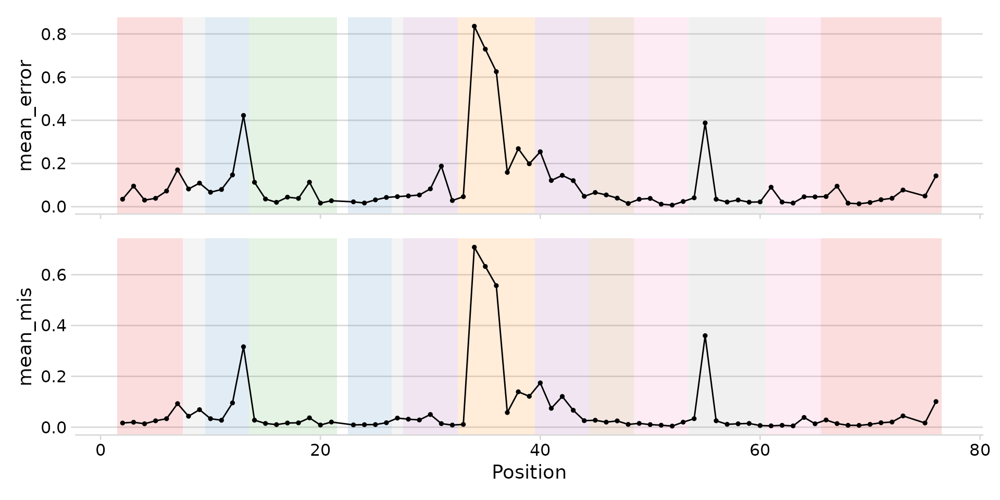
Landscape with structural region shading.
Sprinzl axis and modification highlights
Add a secondary x-axis with Sprinzl position labels using
sprinzl_col. Use mod_col to highlight known
modification positions on that axis (shown in bold orange when ggtext is
installed).
plot_mod_landscape(
landscape_data,
metrics = c("mean_error", "mean_mis"),
region_col = "region",
sprinzl_col = "sprinzl_label",
mod_col = "has_mod",
title = "tRNA-Glu-UUC-1-1 modification landscape",
heights = c(2, 1)
)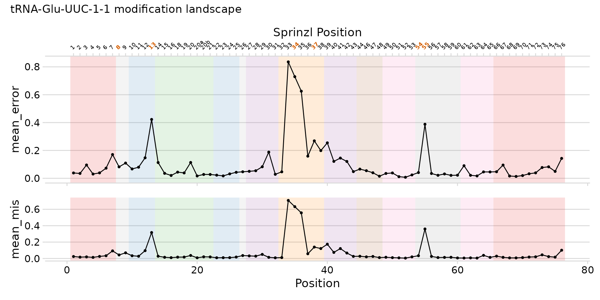
Full landscape with regions, Sprinzl axis, and modification highlights.
Heatmaps from modkit data
The heatmap workflow also supports modification data from Oxford
Nanopore’s modkit
tool. Two input formats are supported: per-read calls from
modkit extract and per-position summaries from
modkit pileup.
From modkit extract (per-read calls)
summarize_mod_calls() reads a
mod_calls.tsv.gz file (from
modkit extract --call-code) and computes per-position
modification frequency — the proportion of reads carrying a
non-canonical base call at each position.
# Summarize per-position modification frequency from each sample
wt_mods <- summarize_mod_calls("wt_sample.mod_calls.tsv.gz")
mut_mods <- summarize_mod_calls("mut_sample.mod_calls.tsv.gz")
# Bind with condition labels
mod_summary <- bind_rows(
mutate(wt_mods, condition = "wt"),
mutate(mut_mods, condition = "mut")
)
# Compute delta (reuses compute_bcerror_delta with mod_freq as value)
mod_delta <- compute_bcerror_delta(
mod_summary,
delta = wt - mut,
value_col = "mod_freq"
)
# Prepare and plot (same workflow as bcerror data)
mod_heatmap <- prep_mod_heatmap(
mod_delta,
value_col = "delta",
sprinzl_coords = sprinzl,
mods = mods
)
plot_mod_heatmap(
mod_heatmap,
value_col = "delta",
ref_col = "trna_label",
color_limits = c(-0.5, 0.5),
fill_name = "\u0394 mod frequency"
)From modkit pileup (bedMethyl)
read_bedmethyl() reads the 18-column bedMethyl format
produced by modkit pileup. The percent_mod
column contains the percentage of reads with a given modification at
each position, which can be compared across conditions.
# Read bedMethyl files
wt_bed <- read_bedmethyl("wt_sample.bed.gz", min_cov = 10)
mut_bed <- read_bedmethyl("mut_sample.bed.gz", min_cov = 10)
# Bind with condition labels
bed_summary <- bind_rows(
mutate(wt_bed, condition = "wt"),
mutate(mut_bed, condition = "mut")
)
# Compute delta using percent_mod (0-100 scale)
bed_delta <- compute_bcerror_delta(
bed_summary,
delta = wt - mut,
value_col = "percent_mod"
)
# Prepare and plot
bed_heatmap <- prep_mod_heatmap(
bed_delta,
value_col = "delta",
sprinzl_coords = sprinzl
)
plot_mod_heatmap(
bed_heatmap,
value_col = "delta",
ref_col = "trna_label",
color_limits = c(-50, 50),
fill_name = "\u0394 % modified"
)Session info
sessionInfo()
#> R version 4.6.0 (2026-04-24)
#> Platform: x86_64-pc-linux-gnu
#> Running under: Ubuntu 24.04.4 LTS
#>
#> Matrix products: default
#> BLAS: /usr/lib/x86_64-linux-gnu/openblas-pthread/libblas.so.3
#> LAPACK: /usr/lib/x86_64-linux-gnu/openblas-pthread/libopenblasp-r0.3.26.so; LAPACK version 3.12.0
#>
#> locale:
#> [1] LC_CTYPE=C.UTF-8 LC_NUMERIC=C LC_TIME=C.UTF-8
#> [4] LC_COLLATE=C.UTF-8 LC_MONETARY=C.UTF-8 LC_MESSAGES=C.UTF-8
#> [7] LC_PAPER=C.UTF-8 LC_NAME=C LC_ADDRESS=C
#> [10] LC_TELEPHONE=C LC_MEASUREMENT=C.UTF-8 LC_IDENTIFICATION=C
#>
#> time zone: UTC
#> tzcode source: system (glibc)
#>
#> attached base packages:
#> [1] stats graphics grDevices utils datasets methods base
#>
#> other attached packages:
#> [1] dplyr_1.2.1 clover_0.0.0.9000
#>
#> loaded via a namespace (and not attached):
#> [1] SummarizedExperiment_1.42.0 gtable_0.3.6
#> [3] xfun_0.57 bslib_0.10.0
#> [5] ggplot2_4.0.3 htmlwidgets_1.6.4
#> [7] Biobase_2.72.0 lattice_0.22-9
#> [9] tzdb_0.5.0 vctrs_0.7.3
#> [11] tools_4.6.0 generics_0.1.4
#> [13] stats4_4.6.0 parallel_4.6.0
#> [15] tibble_3.3.1 pkgconfig_2.0.3
#> [17] Matrix_1.7-5 RColorBrewer_1.1-3
#> [19] S7_0.2.2 desc_1.4.3
#> [21] S4Vectors_0.50.0 lifecycle_1.0.5
#> [23] stringr_1.6.0 compiler_4.6.0
#> [25] farver_2.1.2 Biostrings_2.80.0
#> [27] textshaping_1.0.5 Seqinfo_1.2.0
#> [29] litedown_0.9 htmltools_0.5.9
#> [31] sass_0.4.10 yaml_2.3.12
#> [33] pillar_1.11.1 pkgdown_2.2.0
#> [35] crayon_1.5.3 jquerylib_0.1.4
#> [37] tidyr_1.3.2 DelayedArray_0.38.1
#> [39] cachem_1.1.0 abind_1.4-8
#> [41] commonmark_2.0.0 tidyselect_1.2.1
#> [43] digest_0.6.39 stringi_1.8.7
#> [45] purrr_1.2.2 labeling_0.4.3
#> [47] cowplot_1.2.0 fastmap_1.2.0
#> [49] grid_4.6.0 cli_3.6.6
#> [51] SparseArray_1.12.2 magrittr_2.0.5
#> [53] patchwork_1.3.2 S4Arrays_1.12.0
#> [55] utf8_1.2.6 readr_2.2.0
#> [57] withr_3.0.2 scales_1.4.0
#> [59] bit64_4.8.0 rmarkdown_2.31
#> [61] pwalign_1.8.0 XVector_0.52.0
#> [63] matrixStats_1.5.0 ggtext_0.1.2
#> [65] bit_4.6.0 ragg_1.5.2
#> [67] hms_1.1.4 evaluate_1.0.5
#> [69] knitr_1.51 GenomicRanges_1.64.0
#> [71] IRanges_2.46.0 markdown_2.0
#> [73] rlang_1.2.0 Rcpp_1.1.1-1.1
#> [75] gridtext_0.1.6 glue_1.8.1
#> [77] xml2_1.5.2 BiocGenerics_0.58.0
#> [79] vroom_1.7.1 jsonlite_2.0.0
#> [81] R6_2.6.1 MatrixGenerics_1.24.0
#> [83] systemfonts_1.3.2 fs_2.1.0